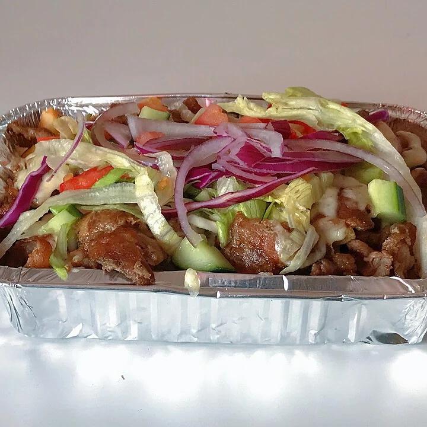

Shaorma

Shaorma de pui extra carne
35 leiLipie cu pui, cartofi, legume, murături și sos la alegere · 600 g
Shaorma de pui
30 leiLipie cu pui, cartofi, roșii, varză și murături · 550 g
Shaorma medie de pui
25 leiLipie cu pui, cartofi, legume și sos la alegere · 400 g

Kebab
Kebab de pui extra carne
35 leiChiflă cu pui, legume, murături și sos la alegere · 500 g
Kebab de pui
30 leiChiflă cu pui, varză, roșii, ceapă și murături · 450 g

Kebab la farfurie extra carne
40 lei250 g de pui, salată, cartofi prăjiți și sos · 650 g
Kebab la farfurie
35 lei200 g de pui, salată, cartofi prăjiți și sos · 600 g

Kapsalon
Kapsalon extra pui
40 leiPui, cartofi, mozzarella, varză, morcov, ceapă și sos · 500 g

Kapsalon cu pui
35 leiPui, cartofi, mozzarella, varză, morcov, ceapă și sos · 400 g
Crispy și burger

Meniu crispy · 5 bucăți
33 leiPulpă de pui crocantă, cartofi prăjiți și sos · 350 g
Meniu crispy de familie · 10 bucăți
55 leiPulpă de pui crocantă, cartofi prăjiți și sos · 650 g
Hamburger de pui
20 leiChiflă, pui, roșii, brânză topită, cartofi și sos · 300 g

De post
Kapsalon de post
35 leiBurger vegetal, cartofi, legume, mozzarella de post și sos · 500 g
Kebab de post
30 leiChiflă cu burger vegetal, cartofi, legume, murături și sos · 450 g
Shaorma medie de post
25 leiLipie, burger vegetal, cartofi, legume și sos · 350 g
Shaorma de post
30 leiLipie, burger vegetal, cartofi, legume și sos · 500 g